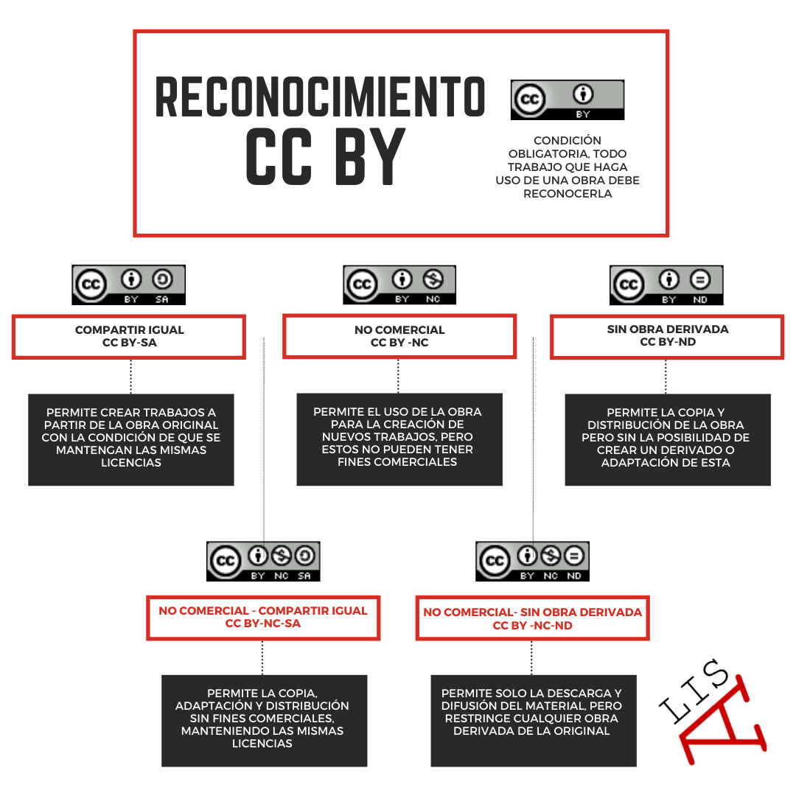
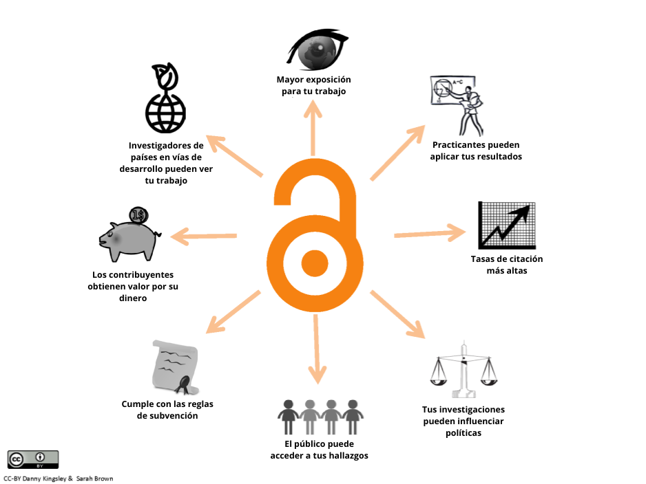
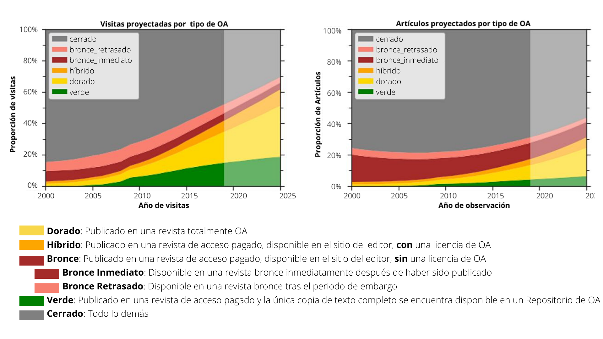
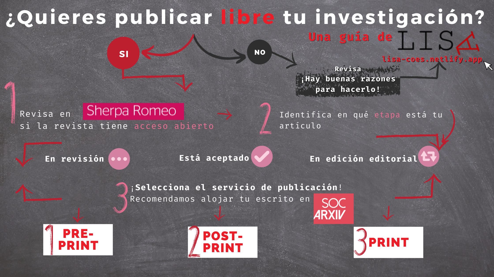
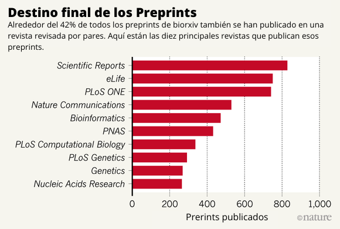
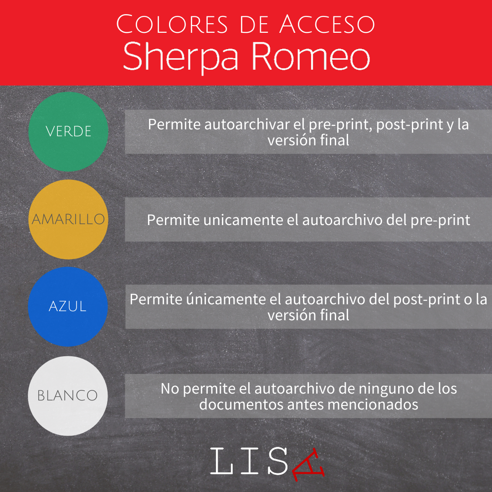

5 Publicaciones libres
Un agricultor hace uso de sus herramientas, talentos y conocimientos para aprovechar lo mejor posible las ventajas del bien común que es la tierra. Una vez que termina la temporada, el agricultor entrega la cosecha a un distribuidor que se encarga de comercializar el fruto de su trabajo y el de otros agricultores. ¿Cuánto recibe realmente el agricultor por su trabajo? ¿Cuáles son las posibilidades reales que tiene la ciudadanía de acceder al bien común de manera autónoma?
El problema del agricultor, el distribuidor y la ciudadanía no es una historia del pasado. El producto de un trabajo que hace uso de un bien común, y el cómo este se distribuye y retribuye dentro de la sociedad, es un tema que cada vez suscita más interés no solo en los gobiernos y la ciudadanía, sino que también en la ciencia. Esto debido a que, como el agricultor elaboró cosechas a partir de la tierra, el científico construirá evidencia nueva a partir de conocimientos previos. Ambos crean productos que son bienes esenciales para la ciudadanía a partir de bienes comunes de la humanidad. El problema para ambos está en que parte de ese quehacer ha sido privatizado, restringiendo a la ciudadanía del libre acceso a tales bienes.
Esta problemática también es extrapolable a la situación que ocurre con las patentes de vacunas y, en específico, con las patentes de las vacunas de COVID-19, donde gran parte de los organismos internacionales llaman a que estas sean consideradas bienes públicos. Así como la privatización al acceso de un conocimiento médico produce desigualdad entre los países más y menos ricos, también el acceso al conocimiento por parte de la sociedad en general -evidencia de cómo mejorar el cumplimiento de las medidas de cuidado, por ejemplo- implicó un daño invaluable en cómo se produjo y se distribuyó la información para combatir la pandemia.
Así, a pesar de que con la globalización y la era digital la labor científica ha podido crear conocimientos con mayor facilidad y divulgarlos de manera inmediata, el desconocimiento y los mitos sobre las leyes que amparan la propiedad intelectual han sido el principal obstáculo para dar el paso hacia la apertura de la creación científica (Fernández, Graziosi, y Martínez 2018). El miedo a ser sancionado por la editorial, el temor al plagio y la pérdida de reconocimiento autoral, destacan entre las principales razones, sin mencionar el dominio que poseen las revistas científicas sobre el conocimiento que se genera y que es publicado por ellas. Dicho esto, la apuesta por destinar los esfuerzo hacia una libre circulación del conocimiento apunta a la necesidad de reapropiarse de los beneficios, resultados y saberes científicos. En este sentido, Banzato (2019) hace un llamado a los organismos de América Latina para generar espacios de evaluación y difusión que sirvan para la democratización del conocimiento, siendo esta una estrategia cultural y política que busca promover los procesos de producción y reproducción social del saber.
La apertura de nuestras investigaciones traen más beneficios que dificultades: no solo contribuimos a nutrir el conocimiento colectivo sobre un problema, sino que incluso podemos alcanzar mejor visibilidad de nuestro trabajo científico. Por eso, en el siguiente capítulo te presentaremos aspectos que debes considerar para lograr una exitosa apertura de tus publicaciones y resultados de investigación.
5.1 Propiedad intelectual
Esta sección busca comprender la importancia de la propiedad intelectual abordando los elementos centrales de la producción científica y su resguardo legal. Es importante conocer los elementos que nos servirán en el momento de definir el carácter y el modo en que permitiremos que nuestras creaciones sean utilizadas y difundidas. La propiedad intelectual no es un elemento accesorio, pues “nos habla de facultades exclusivas que posee el autor sobre su obra y que le permiten gozar de su uso y explotación” (Loredo 2012). Para nuestros efectos, se concibe como el peldaño inicial para abordar los esfuerzos hacia la publicación libre.
5.1.1 Sobre la Propiedad Intelectual y las Licencias
La Propiedad Intelectual (PI) es una normativa que permite el reconocimiento autoral de toda invención de la mente humana (World Intelectual Propiety Organization 2020), su objetivo es fomentar la creación e innovación al mismo tiempo que regula el uso y difusión de las obras. La PI es un tipo de ley cuya rigurosidad varía según el país y funciona en base a dos grandes acepciones:
Common Law: rige en Estados Unidos e Inglaterra y regula la reproducción (copia) de la obra, su distribución, su exhibición pública y su transformación ya sea traducida o adaptada (Fernández 2009). A partir de lo que señala Omatos (2013) se comprende que es una facultad que poseen los autores y su particularidad es que puede ser transferida ya sea por voluntad propia o por prescripción, siendo así ampliados los derechos del uso de la obra bajo distintos tipos de licencias de Copyrigth, Creative Commons, Copyleft y Dominio Público.
Derechos de autor: rige en Europa continental y Latinoamérica y regula las facultades patrimoniales y el derecho moral que posee el autor sobre su obra, esto quiere decir que se reconoce la paternidad sobre la creación y se protege la integridad original del trabajo (Loredo 2012). El derecho moral, a diferencia del Common Law es irrenunciable e inalienable, por lo que no se puede traspasar.
A modo de contexto, en el caso de Chile se han suscrito tratados internacionales que permiten el resguardo internacional de cualquier obra intelectual que se haya elaborado en territorio nacional, los más importantes son dos:
Tratado de Berna (rectificado en 1973): establece indicaciones a los países asociados para resguardar las obras internacionales en el propio territorio.
Convenio de OMPI (rectificado en 1975): establece una suerte de guía a los países adherentes que sirve para la elaboración de leyes que atiendan el resguardo de la propiedad intelectual dentro del mundo digital (Fernández 2009).
5.1.2 Tipos de Licencias
Las licencias sobre la propiedad intelectual regulan los derechos patrimoniales de la obra y establecen las reglas para su uso. Las licencias más conocidas son:
Copyright: Esta licencia permite que el autor se reserve todos los derechos sobre la obra y solo se puede hacer uso de ella bajo permiso del autor.
Creative Commons (CC): Esta licencia, inspirada en la General Public License - GPL (Licencia Pública General en español),1 tiene el propósito de desarrollar herramientas digitales estandarizadas que faciliten la distribución de la obra, pues entrega al autor, empresa o institución la responsabilidad de autorizar reglamentariamente el modo de uso, difusión y citación de su obra. Existen seis tipos de licencias CC (véase Figura N° @ref(fig:licencias)) y cada una de ellas tiene como base la CC-BY que permite hacer uso de la obra con la correspondiente atribución, el resto de licencias funcionan a modo de capas que se superponen a la principal. De este modo, cada capa entrega una especificidad sobre cómo utilizar la obra Creative Commons (2019).
Copyleft: Este tipo de licencia proviene del movimiento Open Access y se orienta a abrir el uso, aplicación, distribución y creación de obras. Además de permitir el uso libre, indica la obligación de que todo proyecto que nazca a partir del original contenga los principios del acceso abierto.
Dominio Público: Si bien no corresponde a una licencia como tal, es un estado en el que la obra no posee protección patrimonial pues ha prescrito el plazo de su protección.
5.1.3 El conocimiento es poder pero ¿de quién?
Tanto organismos de investigación pública como universidades crean conocimiento científico por medio de la investigación y la docencia con el fin de aportar al bien público. Si bien la apertura de las publicaciones puede ser lo ideal para tales objetivos, en ocasiones la confidencialidad de los resultados científicos permite a sus autores obtener beneficios económicos de su trabajo. Sin importar cuál sea el camino, la propiedad intelectual juega un papel importante al orientar la toma de decisiones en torno al desarrollo, difusión y utilización del conocimiento intelectual (WIPO 2020). Por ello contar con una política intelectual de calidad es el primer paso para gestionar estratégicamente la difusión y transferencia de los resultados científicos.
A continuación, se presentan dos experiencias chilenas que se consideran como buenas prácticas en términos de políticas institucionales, pues promueven la apertura de publicaciones.
Política de Acceso Abierto de ANID
La Agencia Nacional de Investigación y Desarrollo (ANID) que nace en 2020 como una estructura que reemplaza a la Comisión Nacional de Investigación Científica y Tecnológica (CONICYT), es hoy la institución que encabeza el Ministerio de Ciencia, Tecnología, Conocimiento e Innovación. Siguiendo el legado de su antecesora, su objetivo es apoyar con recursos al desarrollo de la ciencia y la innovación en Chile. Desde el 2021, bajo el principio de que todo conocimiento generado con fondos públicos debe resultar en beneficios para la sociedad, ANID ha implementado una Política de Acceso Abierto con el objetivo de asegurar la disponibilidad del conocimiento científico que resulte de investigaciones financiadas por la institución (Agencia Nacional de Investigación y Desarrollo 2020). Esta política busca ser un curso de acción progresivo implementado en dos fases:
Fase I: En el plazo inicial de dos años se pretende incentivar la apertura de las publicaciones y sus datos. Esta primera fase servirá para la recopilación de antecedentes sobre el uso y gastos asociados a la investigación abierta. En esta primera etapa de la política toman gran relevancia los principios FAIR. FAIR es la abreviatura en lengua inglesa para referirse a Findability, Accessibility, Interoperability y Reusability (Encontrable, Accesible, Interoperable y Reutilizable). El diseño de estos principios tienen el objetivo de ser una guía medible para que los investigadores realicen una eficaz gestión de los datos y para que posteriormente puedan ser replicados (Wilkinson y Dumontier 2016).
Fase II: Los resultados de la primera fase servirán para que en la segunda se implemente -de manera más rigurosa- la publicación libre mediante la “Ruta Dorada”, la cual corresponde a un formato de publicación que permite eliminar los periodos de embargo, dejando las publicaciones disponibles en acceso abierto de manera inmediata tras el pago del Article Processing Charges - APC a las editoriales. El APC es una tarifa que costea el procesamiento del artículo final para que se adapte al diseño de la revista y, en ocasiones, son las propias instituciones públicas las que costean el APC, devolviendo así un monto no menor a las editoriales. En la sección de Herramientas Para Públicar profundizaremos en ello.
ANID ha detectado de manera temprana el conflicto que acarrea la industria editorial, que lidera un mercado donde los conocimientos se tranzan como un bien. Esto beneficia principalmente a las editoriales con un alto margen de ganancias y, por ello, en la propuesta de ANID se especifica que:
“Esta política busca ser un curso de acción que esté en constante revisión y que permita, de manera progresiva, avanzar hacia un sistema transparente y abierto, donde el acceso, la re-utilización y la constante oferta de nueva información y datos científicos contribuyan de manera real y concreta al desarrollo social, cultural, científico y económico de Chile” (ANID 2020).
Repositorio Institucional, Universidad de Chile
La Universidad de Chile es a la fecha la institución de educación superior pionera en desarrollar un repositorio institucional abierto. Este recoge documentos digitales e impresos con previa autorización, tales como tesis de pregrado y postgrado, pre y post-print, libros y capítulos, material didáctico y presentaciones, informes técnicos, recursos audiovisuales e imágenes. El Repositorio Académico de la Universidad de Chile conserva, difunde y proporciona acceso a material científico generado por docentes e investigadores de la institución y cuenta actualmente con más de 68.000 publicaciones.
Este repositorio académico hace uso de un protocolo de interoperabilidad que permite que se conecte con otros repositorios, con el propósito de incrementar la visibilidad de los documentos. Bajo este objetivo, los autores deben proteger sus obras con licencias Creative-Commons, de este modo aseguran el reconocimiento e identificación de la propiedad intelectual y favorece la visibilidad del trabajo.
Ambos ejemplos de políticas institucionales proveen una exitosa colaboración entre el mundo científico y el público general, ya que orientan la toma de decisiones al finalizar el ejercicio investigativo y permiten la apertura del conocimiento. Según Alperin, Babini, y Fischman (2014), en América Latina se ha desarrollado el ejercicio del Open Access mediante el financiamiento -casi exclusivo- de agencias estatales y agencias de cooperación internacional. Sus resultados se publican principalmente en revistas locales o repositorios regionales. Un ejemplo de ello es Argentina, país donde el 80% de los artículos científicos se encuentran indexados en revistas locales (Alperin, Babini, y Fischman 2014), ya que la nación se ha inclinado en promover políticas de autoarchivo como la Ley Nacional de Repositorios promulgada en 2013 y la creación del Sistema Nacional de Repositorios Digitales creado en 2011 (Monti y Unzurrunzaga 2020).
La evidencia da cuenta que para el caso Latinoamericano son los organismos universitarios y de investigación pública los responsables de desarrollar eficaces políticas de ciencia abierta con el objetivo de aportar a la libre circulación de los resultados científicos, pues como se ilustra en la Figura N° @ref(fig:beneficios), dentro de sus beneficios no solo se evidencia la mayor exposición de los trabajos científicos, sino que también existe un aporte en términos de desarrollo a nivel país, influencia de políticas, entre otros aspectos positivos.

5.2 Formas open access
El quehacer científico de las ciencias sociales es una arena de lucha continua, donde investigadores deben mantenerse en constante entrenamiento para no perder el reconocimiento académico que brinda oportunidades laborales y estatus social. Publica o perece es más una realidad que una frase retórica, pues los científicos sociales están en la obligación de investigar y publicar para mantener su carrera laboral a flote. Este agotador panorama da pie a lo que muchos investigadores de las ciencias sociales han denominado como la crisis de la ciencia (Breznau 2021), un nuevo panorama donde el conocimiento científico es menos confiable producto de prácticas antiéticas en el proceso de investigación. Falta de consistencia, sesgos no controlados, presión editorial, entre otros factores, son los que influyen en un tipo de ciencia con problemas de credibilidad, como es el emblemático caso de Diederik Stapel que se mencionó en el capítulo I.
Quizás muchos confiarán la solución de la crisis a las instituciones revisoras de las revistas, quienes aplican rigurosos métodos de control de calidad. Sin embargo, del papel a la práctica hay un gran trecho. La falta de transparencia en la manipulación de información, los métodos de análisis y la recolección de datos hacen imposible corroborar la veracidad total de un trabajo. Actualmente, muchas editoriales han abordado el problema mediante la adopción del Open Access para promover la transparencia de los datos y la apertura de las publicaciones, pues con esto se permite usar la reproducción de los procesos como un mecanismo de control. Por ello, en esta sección conoceremos las particularidades del Open Access, las rutas por las cuales compartir publicaciones, los repositorios y las revistas que recomendamos.
5.2.1 ¿Qué es el Open Access?
Open Access - OA (Acceso Abierto en español) es un movimiento cuyo objetivo es promover el acceso libre a la producción de conocimiento científico digital y hacer uso de él sin restricciones de copyright. Esto en base a estándares internacionales que permiten instalar la posibilidad de que cualquier persona pueda reutilizar la información de la investigación en cuanto datos, procesos y resultados.
Hace algún tiempo, científicos advirtieron del problema asociado al oligopolio del conocimiento científico del que disfrutan revistas y editoriales de gran renombre, sin mencionar conflictos entre investigadores en torno a la competencia de estatus académico, la manipulación de resultados, los problemas de intersubjetividad y la falta de transparencia en el proceso de investigación (Breznau et al. 2021). De este modo, los primeros vestigios del Open Access aparecieron a la par con la creación de Internet, pero no fue hasta el 2002 con la declaración de Budapest que se definió el concepto de Open Access y que posteriormente sería reforzado con las declaraciones que dieron lugar en Bethesda 2003 y Berlín 2003. Uno de los aspectos destacables de la primera declaración indica que:
Retirar las barreras de acceso a esta literatura acelerará la investigación, enriquecerá la educación, compartirá el aprendizaje de los ricos con los pobres y el de los pobres con el de los ricos, hará esta literatura tan útil como sea posible y sentará los cimientos para unir a la humanidad en una conversación intelectual común y búsqueda del conocimiento (Initiative 12 de Septiembre, 2012).
Según Melero y Abad (2008), las causas que gatillan el desarrollo del Open Access son principalmente dos:
La constitución de Internet y las nuevas tecnologías como el medio para la divulgación científica permitió abaratar costos de impresión y acelerar el transporte de los conocimientos.
Los elevados precios de suscripción a revistas científicas digitales se presentaron como barreras económicas y de copyright para acceder al conocimiento y resultados de investigaciones.
¿Por qué hacer uso del Open Access en mis publicaciones?
El estudio de Piwowar, Priem, y Orr (2019) demuestra que desde la década de los noventa ha habido un aumento constante de publicaciones que se adscriben al Open Access y, si bien el fenómeno se desarrolla en mayor medida dentro de las ciencias exactas, las ciencias sociales no se quedan atrás (Swan 2013). Según Hernández (2016), los beneficios atribuídos a las prácticas científicas de carácter abierto no difieren sobre la disciplina y traen consigo efectos positivos ligados a:
- Mayor accesibilidad y conservación de los productos científicos.
- Difusión rápida e inmediata de las publicaciones.
- Facilita la comunicación directa de los conocimientos científicos ayudando a avanzar en el mejoramiento de la calidad en la investigación.
- Abre la posibilidad de reutilizar información, datos y procesos para nuevos proyectos.
5.2.2 Las distintas rutas para publicar de manera abierta
Swan (2013) -representante de UNESCO- define dos rutas principales (tipos de repositorios) donde depositar publicaciones con el rótulo del Open Access (Dorado y Verde), pero en la práctica se pueden diferenciar en cinco. Según Abierto (2019) las principales características de cada una son:
Repositorios de Ruta Dorada: Corresponden a repositorios que publican trabajos de investigación en forma gratuita para el lector, por lo que se puede leer cualquier artículo inmediatamente después de ser publicado. Cabe destacar que, para su publicación, detrás hay un cobro Article Processing Charges - APC (Cargo por Procesamiento de Artículo en español) cuyo costo es pagado por los autores o las instituciones que les financian.
Repositorios de Ruta Híbrida: Gran parte de las editoriales académicas utilizan este modelo con el objetivo de ofrecer Acceso Abierto al mismo tiempo en el que mantienen su modelo de negocio habitual basado en suscripciones. Esto permite a los autores optar por pagar una cuota de publicación y tener sus artículos con Acceso Abierto en revistas por suscripción.
Repositorios de Ruta Verde: Consiste en un proceso de “auto-archivo o auto-depósito” donde los autores comparten sus post-print (artículo final) en sus páginas personales o en revistas que no son gratuitas, pero que poseen repositorios de acceso libre. Estos repositorios antes mencionados se adhieren a un conjunto de reglas y técnicas de inter-operación, formando una red interconectada de bases de datos.
Repositorios de Ruta Diamante: Es un modelo que intenta dar solución a los inconvenientes que surgen en las rutas anteriores. Este posibilita la revisión por pares de los trabajos enviados por medio de investigadores que trabajan como voluntarios, obteniendo de esta forma reconocimiento académico y social. Esta ruta es considerada como el único modelo que garantiza la sostenibilidad de la publicación de acceso abierto.
Repositorios de Ruta Bronce: Según Piwowar, Priem, y Orr (2019) esta es una nueva categoría donde los editores alojan artículos embargados en sitios web de su preferencia, de modo que los trabajos carecen de licencias que permitan su uso autorizado.

La Figura N° @ref(fig:FutureOA) ilustra el modelo elaborado por Piwowar, Priem, y Orr (2019). Este estudio se basa en el análisis de 70 millones de artículos publicados entre 1950 y 2019 que comparten el rasgo de haber sido publicados en acceso abierto y estar alojados en la base de datos de Unpaywall. La técnica utilizada permitió estimar la trayectoria de los artículos hasta el 2025, poniendo énfasis en el porcentaje de visitas y el porcentaje de artículos publicados según cada ruta.
De esta manera, en la Figura N° @ref(fig:FutureOA) se proyecta que para el 2025, los artículos publicados por la vía dorada alcanzarán un aumento de sus visitas en un 33%, la ruta verde un 19% y la ruta híbrida un 10%; mientras que la ruta bronce seguirá la misma trayectoria pero en menor medida. En cuanto al porcentaje de artículos publicados en acceso abierto, esta Figura indica que tanto la ruta verde, dorada e híbrida tendrán un aumento desde el 2019 al 2025, mientras que la ruta bronce en sus categorías inmediata y retrasada se mantendrán uniforme sin aumento ni descenso. Lo importante aquí es un notable aumento de la publicación en abierto en 13 puntos porcentuales, mientras que se estima el descenso de la publicación cerrada en 13 puntos porcentuales.
5.2.3 ResearchGate, Academia.edu y Sci-Hub: ¿Plataformas de aceso abierto?
De seguro conoces las plataformas de ResearchGate y Academia.edu o quizás en alguna ocasión has recurrido a estas páginas para compartir tus publicaciones o descargar archivos científicos para uso personal. Sobre estas plataformas hay que mencionar que no son un ejemplo de Open Access, debido a que funcionan como redes sociales similares a Facebook o LinkedIn, pues su objetivo es crear redes de contactos entre colegas e investigadores con intereses afines. Según Fortney y Gonder (2015), ResearchGate y Academia.edu, al ser empresas con fines de lucro, no cumplen con la característica principal de los repositorios de Open Access, los cuales son administrados por universidades, agencias gubernamentales, asociaciones internacionales o editoriales que persigan el objetivo de poner los conocimientos al servicio y disponibilidad pública.
Estas páginas al ser de tipo auto-archivo presentan similitudes con los repositorios de ruta verde, ya que los documentos se guardan en sitios personales creados por el propio autor, sin embargo, dadas las características de ResearchGate y Academia.edu, estas no permiten corroborar los estándares de calidad y seguridad de las publicaciones, ni tampoco se asegura su permanencia perpetua. Dicho lo anterior, publicar la producción científica en cualquier plataforma digital no implica estar desarrollando prácticas acordes al Open Access.
Las restricciones de pago empujaron al desarrollo de sitios piratas que funcionan como bases de datos integrando diversas publicaciones, estos son denominados como la vía negra del Acceso Abierto que buscan hacer frente a las barreras de pago (Björk 2017). Un claro ejemplo es el sitio web Sci-Hub que desde el 2011 posibilita el libre acceso a literatura científica (tanto pagada como libre) y para el 2021 alberga más de 85 millones de documentos. Su eslogan Sci-Hub para remover todas las barreras en el camino de la ciencia se instaura bajo tres principios: (1) El conocimiento es para todos, (2) No al Copyright y (3) Apoyo al Open Access. Sin embargo, Monti y Unzurrunzaga (2020) indica que el carácter “ilegal” del sitio es la razón de que exponentes de la ciencia lo restrinjan, dado que no tiene la injerencia para modificar los aspectos legales de las publicaciones, transgrede los derechos de explotación indicados por los autores y puede conducir a un desprestigio del Open Access.
Es evidente que lo atractivo de estos sitios es la posibilidad de acceder de manera libre a las publicaciones. Un hecho corroborable es la investigación de Bohannon (2016), en ella se ha concluido que el 25% de los países que registran la mayor cantidad de descargas desde Sci-hub, corresponden a las naciones más ricas del mundo en Europa y Estados Unidos. Björk (2017) es el primer autor en considerar la plataforma como una vía dentro del Acceso Abierto, y es quizás una reflexión de orden ético-moral la decisión de integrar (o no) los sitios con estas características dentro del Open Access.
5.2.4 Revistas de acceso abierto:
Con la invención de Internet también aumentaron las oportunidades de divulgación científica y, si bien el concepto de Open Access no fue precisado hasta los 2000, en la década anterior ya venían gestándose proyectos como The public-access computer systems review (1990), una revista electrónica tipo boletín que era distribuida por correo electrónico. Posteriormente, en 1991 revistas como Surfaces y Psycoloquy fueron pioneras en instalar la metodología de acceso gratuito a sus publicaciones. Hoy en día son muchos los sitios de repositorios que cumplen con políticas de Acceso Abierto, pero con licencias particulares que es necesario conocer para adentrarnos en su uso. Uno de los sitios que se recomienda usar es el de SocArxiv, pues cuenta con un servicio gratuito de acceso, una base de datos completa y que permite a los autores obtener un DOI para su publicación. Sin mencionar la posibilidad de un contador de descargas y otras particularidades que no poseen las plataformas de ResearchGate y Academia.edu (véase Tabla N° @ref(tab:coom)). En la siguiente sección abordaremos en mayor profundidad su uso.
| Características | ResearchGate, Academia.edu | Sitio web personal | Repositorio Institucional | SocArXiv |
|---|---|---|---|---|
| Acceso libre para leer | Requiere Registro | Si | Si | Si |
| Servicio de acceso publico - sin lucro | No | Solo si es alojado por tu universidad | Solo si es alojado por tu universidad | Si |
| Metadatos completos, incluidos coautores, DOI, ORCID, etc. | Quizás | No | Quizás | Si |
| Enlace para el repositorio para base de datos, codigo, etc. | No | Solo si tu lo construyes | Quizás | Si |
| Url persistente en todas las versiones | - | No | No | Si |
| Entrega DOI para el paper | - | No | Solo Algunos | Si |
| Contador de descargas | Solo Algunos | Quizás | Quizás | Si |
| Contribuye al futuro de la comunicación académica abierta | No | Débilmente | Quizás | Si |
Fuente: Traducción propia a partir de tabla comparativa de SocArXiv.
5.3 Herramientas para publicar
Imagine que usted es parte de un equipo de investigación que finalizó un estudio sobre las repercusiones socio-económicas que tuvo la pandemia de Covid-19 en el país, desarrollando un aporte significativo para la toma de decisiones en materias de políticas económicas y levantando las bases para nuevas líneas de investigación. Dado el aporte que significan para el bien público los resultados de esta investigación, es necesaria su divulgación inmediata, pero es una realidad que la publicación regular en cualquier editorial toma un periodo largo de revisión y aceptación, es por ello que una alternativa es la pre-publicación del documento en un repositorio de Acceso Abierto. En la siguiente guía abordaremos un marco de referencia para empezar a adoptar prácticas ligadas al Open Access.
5.3.1 El camino hacia la publicación
Todo proyecto de investigación tiene la potencialidad de ser publicado pero, como ya se ha ido ilustrando en las secciones anteriores, publicar de manera abierta trae consigo beneficios de visibilidad e impacto social. Para desarrollar una estrategia eficaz de publicación abierta hay que seguir un flujo que se divide tres pasos, como se ilustra en la Figura N° @ref(fig:flujo). Este flujo inicia con la elección de la revista de Acceso Abierto, sigue con la identificación de la etapa del artículo y finaliza con la selección del servicio de publicación.

Paso 1: Pre-rint (Pre-publicación)
Es lo que conocemos comúnmente como el borrador del artículo, el mismo que enviamos al proceso de revisión por pares. Este documento tiene la posibilidad de ser publicado en cualquier repositorio de ruta verde (pre-print server) con el objetivo de ser difundido abiertamente para permitir su disponibilidad inmediata.
La gran particularidad de este método de pre-publicación es que se obtiene un código alfanumérico que identifica y ubica el documento dentro de Internet, esto se conoce como un Digital Object Identifier - DOI (Identificador de Objeto Digital en español), por lo que se convierte de manera inmediata en un documento referenciable y sin posibilidad de plagio. Algunas personas tendrán el temor de que al pre-publicar un informe de investigación, las posibilidades de que el documento sea aceptado y posteriormente publicado en una revista es menor. Sin embargo, los datos empíricos demuestran que en realidad esto no es un impedimento para su posterior publicación. En la investigación de Abdill y Blekhman (2019) que analizó cerca de 37.648 pre-print alojados en bioRxiv -una extensión centrada en biología del sitio ArXiv-, una de las grandes conclusiones tiene que ver con que la tasa de preprints publicados en 2018 alcanzó un máximo de 2,100 por mes y, de manera más específica, en la Figura N° @ref(fig:preprint) se puede identificar a las diez principales revistas que han publicado la mayor cantidad de pre-print. En esta figura, cada barra indica la cantidad de documentos publicados por cada revista.

Para el caso de las ciencias sociales, el servicio de pre-print que recomendamos utilizar es SocArxiv y particularmente para la disciplina de la psicología PsyArxiv. Estos servicios permiten subir archivos PDF desde la plataforma Open Science Framework - OSF (Marco de Ciencia Abierta en español) -un software de código abierto que permite la reproducibilidad de los procesos- y de este modo se obtiene el beneficio de acceder a un DOI que asegure su correcta citación. Ambos repositorios son extensiones de ArXiv, la plataforma pionera de acceso abierto que en la actualidad alberga alrededor de dos millones de artículos categorizados en ocho áreas temáticas. ArXiv no posee tarifas asociadas a la publicación de los artículos, puesto que los documentos se someten a un proceso de clasificación y no a una revisión por pares.
Paso 2: Post-print
La segunda etapa es clave para el camino hacia la publicación, pues el post-print corresponde al artículo aceptado tras la revisión por pares, pero cuyo formato de presentación no ha sido adaptado al requerido. Por lo tanto no ha sido publicado de manera oficial por la revista y para lograr ello, interviene un equipo especializado de la editorial que se encarga de tales aspectos, ya sean márgenes, tipos de citación, estructura, entre otros.
Hoy en día si bien son varias las editoriales que entregan la posibilidad de publicar el post-print en cualquier repositorio abierto, esto es solo tras el periodo de embargo, el cual consiste en un tiempo determinado donde la editorial se reserva los derechos patrimoniales del artículo para su distribución. Dicho esto, recomendamos tener conocimiento de las posibilidades que tiene el autor de publicar un documento previo a la publicación oficial.
Paso 3: Print
En la última etapa del flujo, recomendamos optar por abrir la publicación del Print (artículo final). El artículo final que es publicado oficialmente por una revista permite que la editorial conserve para sí los beneficios de los derechos patrimoniales de la obra, mientras que los equipos de investigación solo conservan el derecho al reconocimiento. Publicar en una revista de reconocimiento que integre políticas de acceso abierto brinda la posibilidad de que una vez finalizado el periodo de embargo, los autores puedan abrir sus artículos, pero no todas las revistas tienen las mismas políticas y directrices, por ello plantean formas y periodos distintos para el depósito del artículo en un repositorio abierto.
Al momento de realizar el envío de un artículo a una revista cualquiera, puede ocurrir que el autor tenga que firmar un Acuerdo de Transferencia de Derechos (CTA por sus siglas en inglés), transfiriéndole al editor todo derecho sobre la obra y, por lo tanto, imposibilitando toda acción posterior del propio creador sobre la investigación. Para que la publicación dentro de una revista no afecte a la posterior decisión de abrir el acceso a una investigación, en ocasiones las editoriales plantean periodos de embargo en cuyo tiempo gozan de los beneficios económicos sobre la obra, pero al finalizar, el autor es libre de difundir en abierto su publicación. En estos casos los editores tienen una licencia que sirve únicamente para publicar, mientras que los autores deben retener para sí los derechos sobre la obra. En síntesis, para que cualquier recurso científico sea abierto, este debe contener una licencia que explicite a sus usuarios las acciones que pueden realizar sobre la obra e indicar la correcta acreditación de la fuente (Swan 2013).
5.3.2 Revistas para publicar con Open Access
Por lo general, cuando llevamos tiempo investigando y publicando tenemos ciertas nociones de las revistas a las que les puede interesar los temas que estamos trabajando o incluso tenemos ciertas certezas de las posibles revistas en las cuales nuestro proyecto tiene una mayor probabilidad de ser publicado. El paso lógico para la publicación es elegir aquella editorial donde queremos que aparezca nuestro trabajo, ya sea por reconocimiento, por recomendaciones, por el tema que trabajamos o por cualquier otro motivo que tengamos. Una vez elegida la revista, se recomienda revisar las políticas de autoarchivo y para ello recomendamos acceder a Sherpa Romeo y buscar la revista escogida. Sherpa Romeo es un sitio web que funciona como una base de datos que recopila la información básica sobre las políticas de autoría y acceso abierto de las principales revistas científicas de todo el mundo que utiliza un código de cuatro colores para diferenciar los tipos de políticas de cada revista, los que se definen en la Figura N° @ref(fig:colores-sherpa):

El mundo del Open Access es bastante grande y en ocasiones costoso, toda revista de ruta dorada posee costos de APC que deben ser financiados por los investigadores o sus patrocinantes, lo que se vuelve una barrera económica para los equipos de investigación que deseen abrir sus publicaciones, por ello el proceso de autoarchivo surge como una alternativa al alcance de cualquiera y, en su mayoría, cientistas sociales utilizan la vía verde y la diamante para depositar sus manuscritos o tesis en repositorios como Dialnet, Latindex, Scielo, Redalyc y CLACSO. Adicionalmente, existen revistas de ciencias sociales cuyo foco se encuentra en el diseño de metodologías de investigación cualitativa y que, además, poseen un alto factor de impacto, como las resumidas en la Tabla N° @ref(tab:revc), pues son indexadas a Scopus (Ulloa y Mardones 2017).
| Revista | País | Asunto o Categoría |
|---|---|---|
| Qualitative Sociology Review | Polonia | Ciencias Sociales diversas |
| The International Journal Qualitative Methods | Canadá | Educación |
| Forum Qualitative Sozialforscung | Alemania | Ciencias Sociales diversas |
Fuente: Adaptación propia a partir de tabla extraída del estudio de Ulloa y Mardones (2017).
5.3.3 Pagos asociados a la publicación abierta
El Open Access está redefiniendo la forma en que el capital científico se define, se moviliza y se trata. Este es un nuevo paradigma que choca con las reglas de un mercado académico que por décadas ha mantenido el monopolio económico del conocimiento científico por medio de barreras de pago, un modelo que no siempre es receptivo a alteraciones y novedades (Sadaba 2014), pero que ha tenido la obligación de adaptarse al nuevo panorama cibernético digital.
El modelo de suscripción se presenta como un muro de pago que al ser costeado permite acceder al material científico. Detrás de cada ejemplar físico existe un costo de adaptación, impresión y envío, lo que obligaba a las editoriales a publicar una cantidad determinada. Sin embargo, con el advenimiento de Internet, la digitalización y la inmediatez de la información, las razones y argumentos que daban sustento al modelo se volvieron obsoletas. La era digital permitió avanzar a pasos agigantados en el desarrollo de nuevos conocimientos, en la difusión masiva e instantánea de los trabajos académicos y, por consecuencia, abrió paso al cuestionamiento de las suscripciones pagadas como método de acceso al conocimiento. En este sentido, la declaración que tuvo lugar en Bethesda (2003) fue precisa en indicar que “Internet ha cambiado fundamentalmente las realidades prácticas y económicas relacionadas con la distribución del conocimiento científico y el patrimonio cultural”.
En la nueva era digital, el modelo de suscripción sigue estando presente, pero convive con el paradigma del open access, el que intenta superar las barreras de pago poniendo la responsabilidad de la apertura del conocimiento en el propio autor. Algunos repositorios de ruta dorada e híbrida solicitan un pago de APC para publicar en acceso abierto, esto corresponde a un modelo de negocios cuyo propósito es financiar los gastos asociados a la gestión de la publicación. En estricto rigor, no existe un monto estandarizado del APC, por lo que su costo dependerá únicamente de la revista. Su valor fluctúa según el pago de impuestos adicionales, lo que se puede evidenciar en la Tabla N° @ref(tab:precio). Según Socha (2018), de las revistas de mayor renombre en la industria académica como Elsevier, Springer, Wiley y Taylor & Francis se han adscrito al acceso abierto cobrando a los autores un costo de APC pero manteniendo su modelo de suscripción.
| Repositorio | APC mínimo | APC máximo | ¿Open Acces o Híbrido? |
|---|---|---|---|
| ELSEVIER | $100 | $5.000 | Híbrido |
| SPRINGER | $3.000 | $3.000 | Híbrido |
| WILEY | $1.300 | $5.200 | Híbrido |
| Taylor y Francis | $500 | $2.950 | Open Access |
Fuente: Adaptación propia a partir de información recopilada en University of Cambridge (2018).
Spinak (2019) indica que tanto en Estados Unidos como en países Europeos ha habido un aumento exponencial del costo del APC a través de los años. A modo de ejemplo, el APC promedio de 319 revistas asociadas a las editoriales BMC, Frontiers, MDPI e Hindawi aumentó entre 2,5 y 6 veces la inflación entre el 2012 y el 2018, al alero de un considerable crecimiento en la cantidad de volúmenes que paso de 58.007 hasta 127.528 en aquellos años. Los editores han admitido que el costo del APC lo fijan según el valor económico de la revista que es atribuido según el valor de impacto.
La introducción de un sistema de pagos por procesamiento de artículos hace frente al modelo de suscripción, pero no logra reemplazarlo. En cambio, funciona de manera paralela dentro del mercado científico, presentándose como una nueva barrera que obstaculiza la decisión de abrir las publicaciones de aquellas investigaciones que son autónomas o que dispongan de un presupuesto acotado. Los APC tienen sus propios cuestionamientos y uno de ellos refiere a que el pago no tiene mucho que ver con el procesamiento y posterior publicación del artículo, sino que más bien los equipos de investigación pagan por el reconocimiento de ser publicados en una revista de alto factor de impacto (Velterop 2018). Pareciera ser que el nuevo ciclo de la ciencia que apuntaba a la democratización del conocimiento se vio inmerso en las lógicas económicas en donde las editoriales obtienen los principales beneficios monetarios.
¿Pagar por hacer ciencia o pagar por reconocimiento? Claro esta que existen otras vías gratuitas para publicar de manera abierta, sin embargo la ciencia -y principalmente las ligadas a la medicina, la física y las matemáticas- ha tenido la necesidad imperiosa de ser creíble, reconocida y citada, y por ello existe una mayor competencia en torno al reconocimiento que otorga la publicación en revistas de alto impacto. Sin embargo, el quehacer en pos del conocimiento y su disposición como bien público para la sociedad y su desarrollo poco tiene que ver con una distinción simbólica que sirve dentro del mundo científico. La ciencia social, a diferencia de las ciencias exactas, se ha podido desarrollar con mayor libertad por medio de las vías gratuitas en importantes repositorios de ruta verde, como es el ejemplo del caso latinoamericano que profundizaremos en la siguiente sección.
La General Public License es una licencia elaborada por el sistema operativo GNU y su objetivo es permitir el uso de software y códigos de libre acceso. GNU es un sistema libre que busca ser compatible con Unix, otro sistema operativo que se caracteriza por ser portable, multitarea y multiusuario (Blanca 2019).↩︎